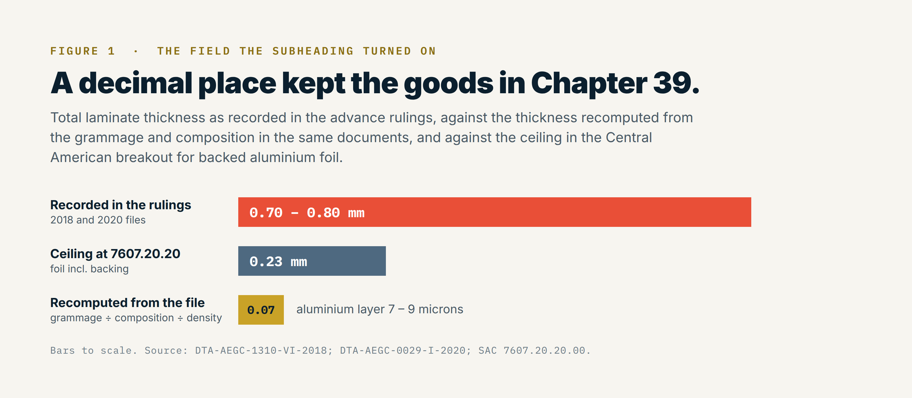
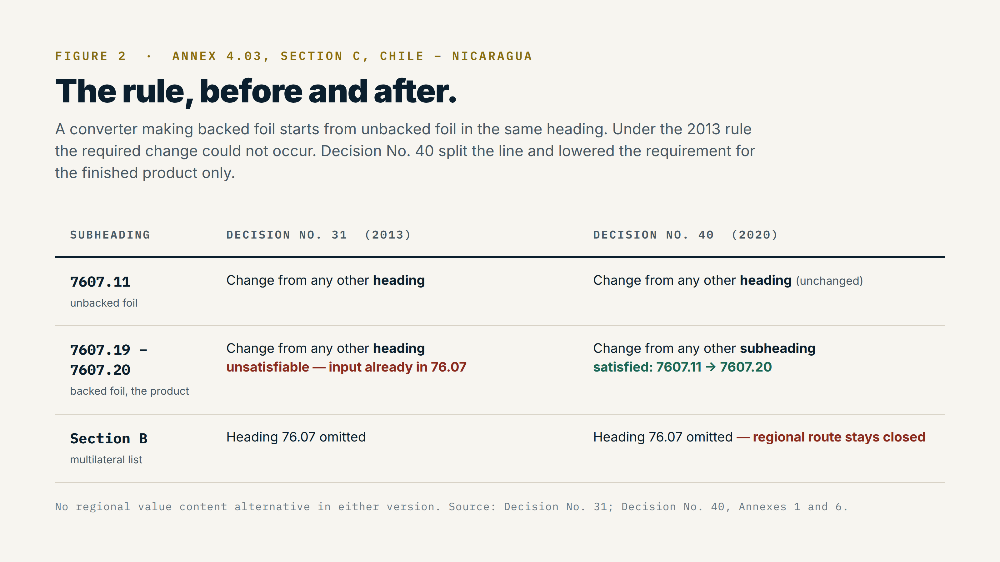

Both tariff lines carried the same duty. Ten percent MFN under the Central American tariff, whether the laminate entered as plastic sheet of 3921.90.44 or as backed aluminium foil of 7607.20.20. Nothing about the reclassification I spent two years arguing lowered a rate by a single point. That is the part practitioners tend to find counterintuitive, and it is the reason the case is worth telling. Classification did not change what the goods paid. It changed which origin rule they answered to, and the origin rule was where the money was.
A global plastics reduction programme removed PET layers from a flexible laminate used for instant coffee in single-serve sachets. The structure had to stay hermetic, because the product is hygroscopic and the barrier is a food safety requirement rather than a preference. The only substitution that held the barrier was aluminium. The pack looked the same on the shelf. Its tariff treatment did not stay the same, and nobody in the sourcing decision had asked whether it would.
The supply then moved to a Chilean producer. On paper the swap was cost-neutral. It was not, and the reason took three years to fix.
In June 2018 the customs authority issued an advance ruling on two samples of the 1.8 gram presentation, filed through one licensed broker. In January 2020 it issued a second ruling on the 8 gram presentation, filed through a different broker, this time with a laboratory opinion behind it. Both landed in the same place: heading 39.21, other plates, sheets, film, foil and strip of plastics.
Both rulings reasoned the same way. General Interpretative Rules 1 and 6, together with Note 1 and Note 10 to Chapter 39. Neither invoked essential character. Two brokers, two years apart, identical outcome. That is a useful thing to know about your own file, because it rules out the comfortable explanation. This was not a broker who handled it badly. Without the right technical argument, the record produces the same answer every time it is submitted.
Look at what the record actually contained. The 2020 ruling records a composition of 24 percent PET, 50 percent low-density polyethylene, 26 percent aluminium foil, and 9.10 percent ink and adhesive, at 80.18 grams per square metre, with total thickness given as 0.8 millimetres. The 2018 rulings give thicknesses of 0.7 and 0.8 millimetres at comparable grammages.
Those thickness figures cannot be right, and the rulings themselves contain the arithmetic that shows it. Take the grammage, split it by the stated composition, divide each fraction by the density of the material, and the laminate comes to roughly 0.07 millimetres, not 0.7. The aluminium layer alone works out at between 7 and 9 microns, which is the ordinary gauge of foil in a coffee sachet. The recorded figure is off by a decimal place, and it is off in all three rulings.

It mattered because of where the competing subheading sits. Heading 76.07 covers aluminium foil of a thickness not exceeding 0.2 millimetres excluding backing, and the Central American breakout at 7607.20.20 is written for foil backed with paper or plastics, printed or not, of a thickness not exceeding 0.23 millimetres including the backing. A laminate recorded at 0.8 millimetres is three times over that ceiling before anyone opens an argument. The foil gauge was never stated separately anywhere in the file. Only total thickness, and total thickness was wrong.
The third time we did not leave the classification to the officer's own reading. That was the error in 2018. The submission went in with revised technical sheets, fresh laboratory analysis, and a letter setting out the complete argument for 7607.20: the heading text, the subheading text, the thickness threshold, and the structural function of the aluminium layer within the laminate. Getting there meant going back to the supplier and asking them to open the technical sheet well past what a commercial specification normally carries, over several working sessions. An officer classifies against what is in front of him. In 2018 what was in front of him was a composition table and a thickness that was wrong by a decimal place.
There was also a problem on the other side of the border that we could not leave alone. Chile was already exporting the product under 7607.20, and its export statistics said so. Holding the Nicaraguan entry at 3921.90.44 meant the same shipment stood declared under two different headings by the two administrations that handled it. Any verification finds that eventually. So the case was not merely that 7607.20 was the better classification. It was that the existing one could not be reconciled with the record on the export side.
None of it went through outside counsel. It was built on the supplier's technical knowledge and mine, validated internally through the company's indirect tax function.
The goods never changed. The information available to the authority changed, and the reclassification to 7607.20 followed. The same interpretative rules governed all three determinations. What moved was the quality of the record.
Reclassification is where most accounts of a case like this would stop, and it is where the real problem started.
Origin rules attach to tariff lines, not to goods. Move the line and you inherit a different rule. Under Decision No. 31 of the Free Trade Commission, dated 17 October 2013, the specific rule of origin in Annex 4.03 Section C between Chile and Nicaragua read, for subheadings 7607.11 through 7607.20, as a change to those subheadings from any other heading.
Consider what that asks of a producer. A converter making backed foil starts from unbacked aluminium foil, subheading 7607.11. The plastic films come from Chapter 39 and change heading without difficulty. The aluminium does not. It enters and leaves within heading 76.07. A rule demanding a change from any other heading is unsatisfiable for anyone who makes this product the way it is made. Not difficult. Unsatisfiable, as a matter of arithmetic, regardless of process, regardless of value added, regardless of where the plant sits.
There was no regional route around it. Section B of Annex 4.03, the multilateral list applicable between Chile and all five Central American parties, omits heading 76.07 entirely. It still does today, in the current consolidated text. The only rule that has ever governed this product between these two countries is the bilateral one, and the bilateral one was closed.
What opened it was a piece of routine treaty maintenance. The Sixth Amendment to the Harmonized System obliged the parties to transpose their origin annexes into the 2017 nomenclature, which meant the annexes were going to be opened regardless. A technical rewrite already on the calendar is the cheapest vehicle a practitioner will ever find for a substantive change, because nobody has to be persuaded to convene.
The work still took three years, and almost none of it was legal work.
The first obstacle was inventory. The plant held committed stock from the incumbent Central American supplier, and the switch could not happen until that position cycled out. That alone bought months before anything else could begin.
The second was binational and it is the part people imagine when they hear that a rule was changed. My counterpart on the Chilean side carried the case to the economic affairs subsecretariat in Santiago. I carried it to the ministry of trade in Managua. We exchanged technical notes, built comparative tables showing how the same rule read across the other bilateral protocols in the region, and aligned the language we were each proposing so that two administrations would receive one text rather than two. Then we waited, pushed, and waited again. The case for the changed rule fit on three pages. Getting three pages read by the right desk in two capitals, during a pandemic, is not a three-page problem.
The third was internal, and it consumed more calendar than the diplomacy. Changing a strategic supplier at this scale required sourcing approval, finance approval, a revised purchasing budget, an amended position in the temporary admission filings, and a recalculation of the technical conversion coefficients on record with the Ministry of Economy. Each of those was a separate conversation with a separate owner, and each had its own meeting and its own follow-up.
The fourth was the decision not to retain outside counsel. The bilateral case was prepared and defended through the company's indirect tax function and the regional tax team, on the supplier's technical knowledge and mine. Corporate trade work in Latin America is often built on retained external firms. Building it in-house produced a tighter record, because the people writing the argument were the same people who would have to live with it at the counter.
The fifth was simply time, and time is the one no business case ever prices correctly. Three calendar years passed between the first sample on a conference table and the published amendment. At several points the file could have closed unfavourably, and nobody in either administration was in a position to promise it would land.
A file that takes three years needs the operation to survive those three years, and that is the part of the case that rarely gets written down.
The same laminate was material to the export side of the operation, not only to the domestic side, and the export side ran under the inward processing regime, temporary admission for active improvement. Inputs entering under that regime are suspended from duty on the condition that they leave again incorporated into exported goods, reconciled against declared technical conversion coefficients. For the export portion, the origin problem was irrelevant: the duty was suspended by the regime, not relieved by the preference. That coverage bought the time the amendment needed.
It also imposed a discipline that turned out to matter. Changing the laminate meant refiling the conversion coefficients, which meant reconciling grammage and composition against declared yields with the Ministry of Economy. That is the same arithmetic that eventually exposed the thickness error in the classification file. The two files were never separate, and the teams that keep suspensive regimes, tariff preferences and classification in different drawers do not find the connection, because nobody is holding both sets of numbers at once.
One habit is worth naming for practitioners working under other systems, because it transfers.
An advance ruling is usually treated as protection. Something you obtain to be safe, filed away, produced when an officer disagrees with you. In this case the ruling did not save a single dollar of duty on its own, since both lines carried the same rate. What it did was fix a fact, in writing, that the origin argument then stood on. Without a determination placing the goods in 76.07, there was no basis on which to ask two governments to rewrite the rule for 7607.20, because the goods were not in that heading. The ruling was the entry ticket.
The equivalent instrument in the United States sits at 19 CFR Part 177. Most teams use binding rulings reactively, to close a risk. Used the other way, as the first move rather than the last, they open positions that reactive teams never see, because the fact they establish becomes the foundation for something else. That reframing is the transferable part of this case, more than anything about aluminium.
It landed as Decision No. 40 of the Free Trade Commission, adopted in the six-original form these instruments take, signed by Chile on 13 November 2020 and by Nicaragua on 18 December 2020. It repeals Decision No. 31 and rewrites Annex 4.03 Section C for Chile and Nicaragua in its Annex 6. Under the ordinary entry-into-force clause, it applies between Chile and each Central American party ninety days after the last notification between them, which is a detail worth holding on to: the signature date is not the date a shipment can rely on the rule.

The Chapter 76 entry now splits the line. Subheading 7607.11 keeps the change-of-heading rule it always had. Subheadings 7607.19 through 7607.20 take a change from any other subheading. No regional value content alternative, no carve-out. The Chilean converter starts at 7607.11 and finishes at 7607.20, and that is a change of subheading on its face.
The first shipment under the new rule cleared the week after it took effect.
The organisation recorded a twelve-month profit-and-loss impact of three hundred thousand dollars, calculated under an internal accounting policy that capped reported savings at a one-year horizon. That number went into the year-end results. The benefit did not stop when the reporting horizon did. It accumulated in the landed cost line for as long as the structure held, and it never appeared in a management report again.
There is an external check on the scale, for anyone who distrusts remembered numbers. Chilean export statistics under HS 760720 show Nicaragua as the leading worldwide destination for that subheading from 2018 through 2023, in a country pairing where nothing else explains that ranking. A sourcing decision taken for unit cost was legible in public trade data long before it was legible in anyone's landed cost.
Three things, and none of them are about aluminium.
A sourcing substitution is an origin decision. Procurement changed a material to hold a cost, the change moved the tariff line, and the tariff line moved the origin rule. There was no point in the process at which anyone was asked whether the swap was neutral for origin, because at that point no one in the room thought classification was an origin question.
Classification is upstream of origin, and it has to be won first. There is no path to amending the rule for a heading under which your goods are not classified. The two years spent on the classification file were not a detour from the origin problem. They were the entry requirement.
Read your own technical sheets against each other. Grammage, composition, and thickness in the same document have to reconcile. Ours did not, and the field that was wrong was the field the subheading turned on. Reconciling them costs an afternoon. Not reconciling them cost three years.
The operation that prompted all this has since closed. The amended rule is still in Annex 4.03, available to any importer bringing that subheading from Chile. Regulatory work outlasts the operation that asked for it, which is worth remembering when the business case for doing it properly is being argued.